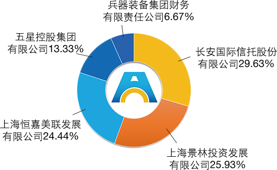
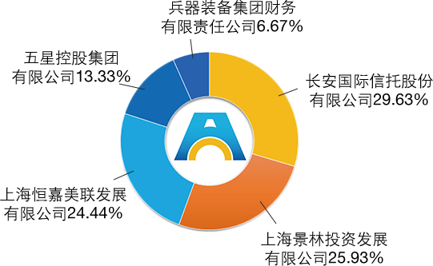

常见问答
长安基金成立于2011年9月5日，注册资本2.7亿元人民币。
截至2015年6月初，长安基金资产管理规模突破500亿元（不含子公司），长安基金及全资子公司长安资产合计管理规模近1000亿。
在2010-2011年同期成立的9家基金公司中，长安基金2014年底管理规模排第2名。
按2014年基金公司专户产品新设规模排名，长安基金在91家已开展专户业务的基金公司中排第5名。

截至2015年6月初，长安基金资产管理规模突破500亿元（不含子公司），长安基金及全资子公司长安资产合计管理规模近1000亿。
在2010-2011年同期成立的9家基金公司中，长安基金2014年底管理规模排第2名。
按2014年基金公司专户产品新设规模排名，长安基金在91家已开展专户业务的基金公司中排第5名。
